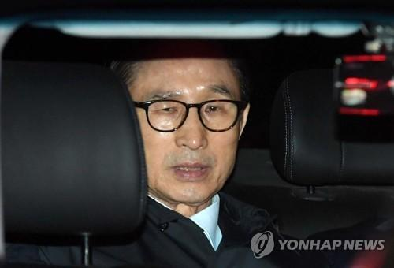

李明博拒绝在狱中接受检方审讯 曾称该说的已说完
2018-03-26 13:56:00 海外网 
李明博（图片来源：韩联社）
海外网3月26日电 韩国前总统李明博22日晚被检方正式逮捕，考虑到77岁的李明博年事已高，且因当天接受体检等走收押流程未能睡好，因此检方决定在给予其充分的休息时间后，于26日对李明博进行上门审讯。李明博的律师于本周一（26日）在新闻发布会上表示，这位前总统拒绝在看守所内接受审讯。
据韩联社报道，李明博的律师表示，考虑到狱中审讯难以保证公平性，周一（26日）上午经过商讨后，李明博表示拒绝在看守所内接受审讯，律师已将李明博的意愿转达给了检察官。
当地时间3月22日晚，韩国法院以犯罪案情重大，有毁灭证据之虞为由，批准逮捕前总统李明博，韩国检方前往李明博私邸实施逮捕。随后，李明博被关押至首尔东部看守所的单间牢房。为让李明博适应看守所生活，检方未在逮捕次日进行突击审讯，而是计划于26日进行上门审讯。据悉，检方可以申请将羁押李明博的时限延长10天至4月10日。
李明博曾以该说的已经说完为由，拒不接受逮捕必要性审查，并且指责检方不保持中立充当“政治报复”爪牙，可能把博取同情的舆论战带到庭审阶段，即便检方上门调查，也不会领情。韩联社指出，李明博23日与律师团商议对答套路和交代策略时表示，如果检方想问同样的问题，就不会接受讯问。
据早前报道，李明博涉嫌收受110亿韩元（约合人民币6503.3万元）的巨额贿赂和秘密筹集339亿韩元（约合人民币1.99亿元）资金并进行洗钱，检方表示，已经掌握足够多的压倒性证据。而李明博14日到案时，只承认收受情报机构提供的1.07亿韩元（约合人民币63万元）贿赂，而对于检方的其他指控基本予以否认。